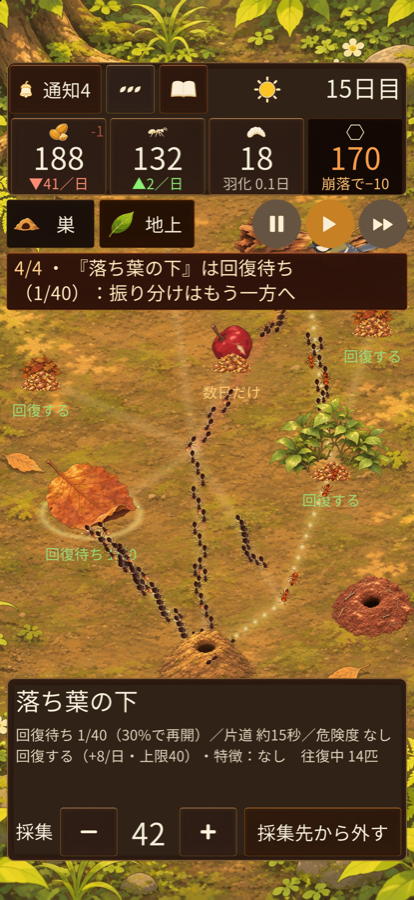
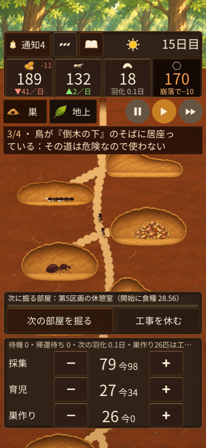

アントログ
ひとつの蟻の巣を育て、その歴史を見届けるゲームです。採集・育児・巣作りに人手を配り、餌場を選んだら、あとは蟻たちの暮らしを眺めましょう。雨や崩落、隣の巣との縄張り争いなどの出来事は、年表に残ります。クリアはありません。


ダウンロード
App Store で準備中です。
ひとつの蟻の巣を育て、その歴史を見届けるゲームです。採集・育児・巣作りに人手を配り、餌場を選んだら、あとは蟻たちの暮らしを眺めましょう。雨や崩落、隣の巣との縄張り争いなどの出来事は、年表に残ります。クリアはありません。


App Store で準備中です。